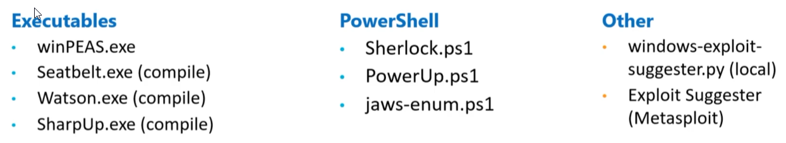

Fuzzy Security Guide - https://www.fuzzysecurity.com/tutorials/16.html
PayloadsAllTheThings Guide - https://github.com/swisskyrepo/PayloadsAllTheThings/blob/master/Methodology%20and%20Resources/Windows%20-%20Privilege%20Escalation.md
Absolomb Windows Privilege Escalation Guide - https://www.absolomb.com/2018-01-26-Windows-Privilege-Escalation-Guide/
Sushant 747's Guide (Country dependant - may need VPN) - https://sushant747.gitbooks.io/total-oscp-guide/content/privilege_escalation_windows.html
=====================================================
Tools
